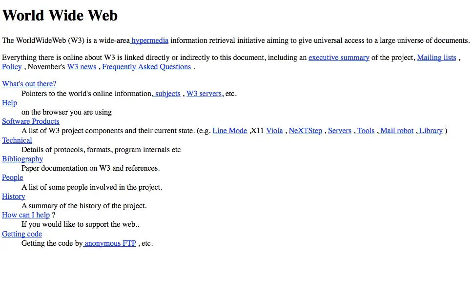

इंटरनेट की उत्पत्ति !
आज हम करेंगे इंटनरेट का जड़ से विश्लेषण ! जंहा हम कुछ निम्नलिखित बिन्दुओ पर गौर करेंगे।1 ) इंटरनेट क्या है ?
2 ) इंटरनेट उत्पत्त्ति कैसे हुई ?
3 ) इंटरनेट पर पहली वेबसाइट कब और किसने लाइव की थी ?
1 ) इंटरनेट क्या है ?
इंटरनेट कम्प्यूटरो का एक विश्वव्यापी नेटवर्क है। इंटरनेट में बहुत सारे स्थानीय ,क्षेत्रीय ,राष्ट्रीय एवं अंतराष्ट्रीय नेटवर्क होते हैं। यह कम्प्यूटरो का एक ऐसा अंतराष्ट्रीय नेटवर्क हे, जो लाखो उद्यमों, सरकारी एजेंसियों ,शैक्षिक संसथानो और व्यक्तियों आदि को परस्पर जोड़ता हे। इस तथ्य से इंकार नहीं किया जा सकता की इंटरनेट ने हमारे जीवन जीने के तरीके में क्रांति पैदा कर दी हे। इसने संचार,व्यवसाय और सुचना प्राप्त करने के साथ-साथ हमारे मनोरंजन के तरीको को बदलकर रख दिया हे।
2 ) इंटरनेट उत्पत्त्ति कैसे हुई !

क्या आपने कभी सोचा हे की एक ऐसा क्रन्तिकारी युग जो पुरे संसार के चाल चलन को बदलदेगा ऐसे युग का प्रारम्भ युद्ध के परिणाम स्वरुप होगा ? 4 अक्टूबर 1957 को पृथ्वी पर एक अद्भूत घटना घटी जिसने पूरी दुनिया को बदलने की एक राह दिखा दी। इस दिन सोवियत संघ ने दुनिया का पहला मैन मेड यानि इंसानों द्वारा बनाया गया सैटेलाइट लॉन्च किया गया था। दुनिया के पहले सैटेलाइट का नाम Sputnik था। ये ख़बर काफी तेजी से पूरी दुनिया में फैल गई। अमेरिका को इस ख़बर से काफी हैरानी हुई क्योंकि अमेरिका भी काफी वक्त से दुनिया का पहला मानव निर्मित सैटेलाइट बनाने में लगा हुआ था लेकिन सोवियत संघ ने उससे पहले ये कर दिखाया है। इस वजह से दोनों देशों के बीच थोड़ी नोक-झोंक शुरू हुई और इन दोनों देशों के बीच एक कोल्ड वार (COLD WAR) शुरू हो गई। इस एजेंसी के नाम में काफी बदलाव हुए। 1972 में इसका नाम DARPA हो गया यानि Defense Advanced Research Projects Agency। इसके बाद 1993 में इसका नाम बदलकर वापस ARPA रखा गया और फिर 1996 में इसका नाम बदलकर DARPA रखा गया। इस एजेंसी की शुरुआत करने के पीछे अमेरिका के राष्ट्रपति का मकसद अपने देश में सांइस एंड टेकनोलॉजी को दूसरे देशों की तुलना में आगे बढ़ाना था। इस तरह पहली बार दुनिया के सामने इंटरनेट की नींव राखी गयी ।
3 ) इंटरनेट पर पहली वेबसाइट कब और किसने लाइव की थी ?
31 साल पहले यानी 6 अगस्त 1991 को लोगों ने दुनिया की पहली वेबसाइट देखी. वर्ल्ड वाइड वेब (WWW) की खोज करने वाले ब्रिटिश वैज्ञानिक सर टिम बर्नर्स ली ने 20 दिसंबर 1990 को NeXT कंप्यूटर पर दुनिया की पहली वेबसाइट लाइव की थी. गौरतलब है कि सर टिम बर्नर्स ली को ही फादर ऑफ इंटरनेट के नाम से जाना जाता है. इस वेबसाइट में उन्होंने सर्वर सेटअप का डिटेल दिया था इसके अलावा उन्होंने वेबसाइट पर शेयर किए गए डेटा को एक्सेस करने के तरीके भी बताए. आज भी दुनिया की पहली वेबसाइट चल रही है और आप भी इस info.cern.ch अड्रेस के जरिए इसे ओपन कर सकते हैं.